Visitekaartjes en flyers
Uitgewerkte voorbeelden voor Tactus Angelis by Mirjam, op ware verhouding en in de huisstijlkleuren. Alles wat je hier ziet is opgebouwd met dezelfde letters, kleuren en beeldelementen als de website.
Visitekaartje Misschien
Haar eigen kernzin staat op de voorkant in plaats van de merknaam. Daardoor werkt het kaartje ook los op een balie: iemand met pijn leest de zin, niet een bedrijfsnaam die hem nog niets zegt. Dit is het hoofdkaartje.
85 × 55 mm · 350 g · dubbelzijdig mat laminaat · liggend


Misschien kan ik jou helpen
van je pijn af te komen.
TACTUS ANGELIS
by Mirjam
Mirjam van Steenbrugge
Shamballa master · Caropoint methode
Behandeling aan huis in Berkel-Enschot
mvansteenbrugge@gmail.com
Afspraak in overleg
Let op de QR: die staat bewust in een cremewit blok met ruimte eromheen. Een QR-code goud-op-groen of wit-uit-groen wordt door veel telefoons niet gelezen — scanners hebben donker op licht nodig, met een rustzone.
Visitekaartje Waar zit het?
Het enige kaartje dat meteen antwoord geeft op de vraag die de doelgroep echt heeft: helpt dit bij míjn klacht? Nuchter, met klachten én tarieven. Dit is het stapeltje dat je achterlaat bij de pedicure of de kapper — staand, zodat het opvalt tussen andere kaartjes in een bakje.
55 × 85 mm · 350 g · mat laminaat · staand
TACTUS ANGELIS
by Mirjam
- ✦ Nekpijn
- ✦ Rugklachten
- ✦ Hielspoor
- ✦ Schouder en knie
- ✦ Onrust en spanning
Misschien kan ik jou helpen.
Scan om direct te mailen
Mirjam van Steenbrugge
Shamballa master · Caropoint methode
Behandeling bij mij thuis in Berkel-Enschot, op een eigen behandeltafel.
mvansteenbrugge@gmail.com
Tarieven op een kaartje binden je. Verhoogt ze later haar prijs, dan is de stapel waardeloos. Bij 100 tot 250 stuks is dat een acceptabel risico — druk hier nooit duizend van.
Flyer Van je pijn af
De neerleg-flyer: bedoeld voor iemand die nog nooit van haar gehoord heeft en in één keer moet begrijpen wat het is, wat het kost en waarom de drempel laag is. Het beste adres om deze neer te leggen is de pedicure — daar zitten mensen met voetklachten die al van alles geprobeerd hebben.
A5, 148 × 210 mm · 250 g zijdemat · dubbelzijdig · oplage 100 à 150
Een behandeling kost €25.
Je ligt gewoon met je kleren aan op de tafel.


Hoe het gaat
Je mailt me. We bellen of appen kort over je klacht. Dan spreken we een moment af dat jou uitkomt — 's avonds of in het weekend kan meestal ook.
✦
Caropoint basis — €25
Drukpunten en het resetten van gewrichten. Gericht op de plek waar het zit: nek, rug, schouder, hiel.
✦
Caropoint pro — €50
Uitgebreider, meer technieken, als de klacht om meer vraagt.
✦
Shamballa — €25
Energetische healing via handoplegging. Zacht, je houdt je kleren aan. Voor rust, balans en herstel.
“Het lijkt wel of ik op wolken loop. Ik voel me zoveel lichter.”
— na een eerste behandeling
Zin om het te proberen?
Stuur me een mailtje, dan zoeken we samen een moment.
mvansteenbrugge@gmail.com
Berkel-Enschot, bij Tilburg
Een behandeling is een aanvulling, geen vervanging van medische zorg. Heb je klachten, blijf altijd bij je huisarts of specialist onder behandeling.
De kleine regel onderaan is geen juridische franje. Mirjam is niet BIG-geregistreerd; beloftes over genezing mag ze niet doen. Deze regel beschermt haar, en bij deze doelgroep verhoogt hij juist het vertrouwen.
Meegeefkaart Tot de volgende keer
Geen flyer om neer te leggen, maar een kaartje dat iedereen ná de behandeling meekrijgt. Het doet drie dingen tegelijk: het vertelt wat je die dag beter wel en niet doet, het is haar afsprakenkaartje, en het nodigt uit om door te geven aan iemand met dezelfde klacht.
A6, 105 × 148 mm · 300 g zijdemat · dubbelzijdig · oplage 100
Je bent geweest.
Wat nu?
✦ Drink vandaag wat extra water.
Je lichaam is aan het werk gezet en ruimt makkelijker op met genoeg vocht.
✦ Neem het rustig aan.
Ga vandaag niet meteen de tuin om en plan geen zware training.
✦ Het mag even napraten in je lijf.
Wat moeheid, een zwaar gevoel of juist heel licht — dat hoort erbij en zakt meestal binnen een dag of twee.
✦ Vertrouw je het niet?
Wordt de pijn erger of krijg je het benauwd? Bel je huisarts. Altijd. En laat het mij daarna even weten.
Fijn dat je het aandurfde.
Volgende afspraak
Datum
Tijd
Behandeling
Ken je iemand met dezelfde klacht?
Geef dit kaartje aan diegene door. Een eerste behandeling kost €25 en duurt ongeveer een uur. Je hoeft je niet uit te kleden en je hoeft nergens in te geloven.
TACTUS ANGELIS
Mirjam van Steenbrugge
mvansteenbrugge@gmail.com